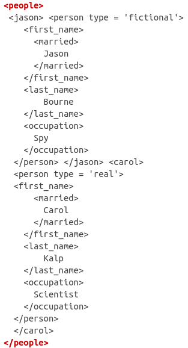
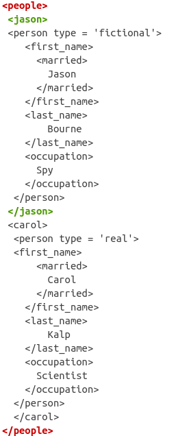
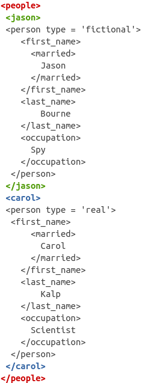
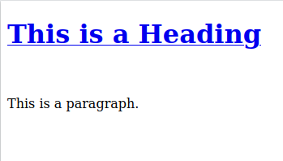

library(xml2)3 Data Formats for Webscraping
Most of the webscraping that you’ll be doing will involve parsing either XML or HTML. These two formats are very much alike and in fact for many of our examples you’ll notice that they are almost indistinguishable. Out on the web you’ll find very formal definitions of these languages but here’s my definition for the layperson: a series of tags that formats how a website is structured (HTML) or how you store and transfer data (XML). Still rather vague eh? Let’s go into it for concrete examples.
XML is an abbreviation for Extensible Markup Language whereas HTML stands for Hypertext Markup Language. As you might’ve guessed, they’re both ‘Markup’ languages, so they share a lot in common. In R you can read both formats with the xml2 package. Let’s load that package before getting started:
3.1 A primer on XML and HTML
Let’s begin with a simple example. Below we define a string and look at its structure:
xml_test <- "<people>
<jason>
<person type='fictional'>
<first_name>
<married>
Jason
</married>
</first_name>
<last_name>
Bourne
</last_name>
<occupation>
Spy
</occupation>
</person>
</jason>
<carol>
<person type='real'>
<first_name>
<married>
Carol
</married>
</first_name>
<last_name>
Kalp
</last_name>
<occupation>
Scientist
</occupation>
</person>
</carol>
</people>
"
cat(xml_test)<people>
<jason>
<person type='fictional'>
<first_name>
<married>
Jason
</married>
</first_name>
<last_name>
Bourne
</last_name>
<occupation>
Spy
</occupation>
</person>
</jason>
<carol>
<person type='real'>
<first_name>
<married>
Carol
</married>
</first_name>
<last_name>
Kalp
</last_name>
<occupation>
Scientist
</occupation>
</person>
</carol>
</people>In XML and HTML the basic building blocks are called tags. For example, the first tag in the structure shown above is <people>. This tag is matched by </people> at the end of the string:

If you pay close attention, you’ll see that each tag in the XML structure has a beginning (signaled by <>) and an end (signaled by </>). For example, the next tag after <people> is <jason> and right before the tag <carol> is the end of the jason tag </jason>.

Similarly, you’ll find that the <carol> tag is also matched by a </carol> finishing tag.

In the XML world, tags can have whatever meaning you attach to them (such as <people> or <occupation>). However, for HTML there are hundreds of tags which are standard for structuring websites. Here I want to stop for a second to highlight that XML and HTML have many differences, some conceptual and others visible to the users. Throughout the rest of this chapter I’ll focus on what I think are the most important ones for you in the context of webscraping.
Let’s compare visibly the previous XML with an example HTML:
html_test <- "<html>
<head>
<title>Div Align Attribbute</title>
</head>
<body>
<div align='left'>
First text
</div>
<div align='right'>
Second text
</div>
<div align='center'>
Third text
</div>
<div align='justify'>
Fourth text
</div>
</body>
</html>
"One of the key differences is that these tags (<div>, <head>, <title>, etc..) have specific properties that structure how a website is shown to someone on a browser. Anything inside the <head> tag will be a header on a website. Anything within the <body> tag will be the body of the website, and so on. The tags themselves are standard across the HTML language and have predetermined behavior on how to format a website. Let’s look at another HTML but also with the result of being structured on a website. Here’s the code:
<!DOCTYPE html>
<html>
<head>
<title>Page Title</title>
</head>
<body>
<h1> <a href="www.google.com">This is a Heading </a> </h1>
<br>
<p>This is a paragraph.</p>
</body>
</html>and here is the rendered website:

This is a heading contains a hyperlink (<a> tag with the href property), is bigger and is in bold in comparison to “This is a paragraph”. These specific tags together with their attributes are interpreted to give this outline of the text and as you’ll start to notice, it is the trademark value of the HTML language.
In contrast, XML tags have no meaning other than what the creator meant for them. An <occupation> tag simply means that inside the tag is occupation related content. That’s why we say that XML is for transferring data (because the tags have no inherent behavior) and HTML is for structuring websites.
Another difference between XML and HTML is that some HTML tags don’t need to be closed, meaning they don’t need a </> tag (for example <br> which adds a space between content in a website). On the other hand, XML is very strict about this and you’ll find that all tags have an equivalent closing tag.
Now, you might be asking yourself, since there are no standard tags for XML, how many standard HTML tags are there? Well, too many for you to remember if you’re getting started. Here’s a short set:

For a more comprehensive list see here. You don’t have to learn every single tag for webscraping (in fact I only know a handful) but it’s helpful to have a hint on what they do to be able to locate specific parts of a website that you’re interested in webscraping. With the theory out of the way, let’s get our hands dirty by manipulating these formats in R.
In R you can read XML and HTML formats with the read_xml and read_html functions. Let’s read in the XML string from our fake example and look at its general structure:
xml_raw <- read_xml(xml_test)
xml_structure(xml_raw)<people>
<jason>
<person [type]>
<first_name>
<married>
{text}
<last_name>
{text}
<occupation>
{text}
<carol>
<person [type]>
<first_name>
<married>
{text}
<last_name>
{text}
<occupation>
{text}You can see that the structure is tree-based, meaning that tags such as <jason> and <carol> are nested within the <people> tag. In XML jargon, <people> is the root node, whereas <jason> and <carol> are the child nodes from <people>.
In more detail, the structure is as follows:
- The root node is
<people> - The child nodes are
<jason>and<carol> - Then each child node has nodes
<first_name>,<married>,<last_name>and<occupation>nested within them.
Put another way, if something is nested within a node, then the nested node is a child of the upper-level node. In our example, the root node is <people> so we can check which are its children:
# xml_child returns only one child (specified in search)
# Here, jason is the first child
xml_child(xml_raw, search = 1){xml_node}
<jason>
[1] <person type="fictional">\n <first_name>\n <married>\n Jason\n ...# Here, carol is the second child
xml_child(xml_raw, search = 2){xml_node}
<carol>
[1] <person type="real">\n <first_name>\n <married>\n Carol\n ...# Use xml_children to extract **all** children
child_xml <- xml_children(xml_raw)
child_xml{xml_nodeset (2)}
[1] <jason>\n <person type="fictional">\n <first_name>\n <married>\n ...
[2] <carol>\n <person type="real">\n <first_name>\n <married>\n ...3.2 Tag attributes
Tags can also have different attributes which are usually specified as <fake_tag attribute='fake'> and ended as usual with </fake_tag>. If you look at the XML structure of our example, you’ll notice that each <person> tag has an attribute called type. As you’ll see in our real-world example, extracting these attributes is often the aim of our scraping adventure. Using the xml_attrs function we can extract all attributes that match a specific name:
# Extract the attribute type from all nodes
xml_attrs(child_xml, "type")[[1]]
named character(0)
[[2]]
named character(0)Wait, why didn’t this work? Well, if you look at the output of child_xml, we have two nodes which are for <jason> and <carol>.
child_xml{xml_nodeset (2)}
[1] <jason>\n <person type="fictional">\n <first_name>\n <married>\n ...
[2] <carol>\n <person type="real">\n <first_name>\n <married>\n ...Do these tags have an attribute? No, because if they did, they would have something like <jason type='fake_tag'>. What we need is to look down at the <person> tag within <jason> and <carol> and extract the attribute from <person>.
Does this sound familiar? Both <jason> and <carol> have an associated <person> tag below them, making them their children. We can just go down one level by running xml_children on these tags and extract them.
# We go down one level of children
person_nodes <- xml_children(child_xml)
# <person> is now the main node, so we can extract attributes
person_nodes{xml_nodeset (2)}
[1] <person type="fictional">\n <first_name>\n <married>\n Jason\n ...
[2] <person type="real">\n <first_name>\n <married>\n Carol\n ...# Both type attributes
xml_attrs(person_nodes, "type")[[1]]
type
"fictional"
[[2]]
type
"real" Using the xml_path function you can even find the ‘address’ of these nodes to retrieve specific tags without having to write down xml_children many times. For example:
# Specific address of each person tag for the whole xml tree
# only using the `person_nodes`
xml_path(person_nodes)[1] "/people/jason/person" "/people/carol/person"We have the ‘address’ of specific tags in the tree but how do we extract them automatically? To extract specific ‘addresses’ of this XML tree, the main function we’ll use is xml_find_all. This function accepts the XML tree and an ‘address’ string. We can use very simple strings, such as the one given by xml_path:
# You can use results from xml_path like directories
xml_find_all(xml_raw, "/people/jason/person"){xml_nodeset (1)}
[1] <person type="fictional">\n <first_name>\n <married>\n Jason\n ...The expression above is asking for the node "/people/jason/person". This will return the same as saying xml_raw %>% xml_child(search = 1). For deeply nested trees, xml_find_all will be many times cleaner than calling xml_child recursively many times.
However, in most cases the ‘addresses’ used in xml_find_all come from a separate language called XPath (in fact, the ‘address’ we’ve been looking at is XPath). XPath is a complex language (such as regular expressions for strings) which we’ll cover in chapter @ref(xpath-chapter).
Attributes are very flexible in XML and a tag can have as many attributes as you see fit. For example:
<name>
<person age="23" status="married" occupation="teacher"> John Doe </person>
</name>These attributes can also be repeated many times, so for example, you might have a generic <person> tag that is used for each person in your database:
<name>
<person age="23" status="married" occupation="teacher"> John Doe </person>
<person age="25" status="single" occupation="doctor"> Jane Doe </person>
</name>As usual with HTML, tags are also standard and have specific meaning. Let’s read our previous HTML example and visualize the structure:
html_raw <- read_html(html_test)
html_structure(html_raw)<html>
<head>
<title>
{text}
<body>
{text}
<div [align]>
{text}
{text}
<div [align]>
{text}
{text}
<div [align]>
{text}
{text}
<div [align]>
{text}
{text}The structure shows that each <div> tag has an align attribute. As you might’ve guessed, this attribute aligns text. Most of the common attributes of HTML tags are very easy to understand. Here’s a list of a few:
<a href="https://www.w3schools.com">Visit W3Schools</a>
<img src="img_girl.jpg" width="500" height="600">
<p style="color:red;">This is a red paragraph.</p>The <a> tag contains text with a hyperlink (href). The <img> tag (abbreviation for image) contains the src tag that points to where an image is, together with the width and height of the image. Finally, the <p> tag is short for paragraph and contains the style attribute for declaring styling properties of the text. These are just some examples of common HTML tags and common attributes. In any case, as I’ve outlined above, it’s fine to not know these tags; having an intuition behind what they do is enough to locate specific parts of a website.
To finalize, whenever you are scraping something, you’ll want to know whether it’s XML or HTML based. If you manage to receive an .html or .xml it’s just as simple as looking at the extension of the file. If by any chance you have access to the source code of a file, you can also look at the tags and quickly see if there are many of the standard HTML tags and deduce the actual format. Another solution is to just look at the root node and you’ll see the hint right away. You’ll see that xml is signaled right at the beginning:
<?xml version="1.0>
<company>
<name> John Doe </name>
<email> johndoe@gmail.com </email>
</address>and the same for html:
<!DOCTYPE html>
<html>
<body>
<h1>My First Heading</h1>
<p>My first paragraph.</p>
</body>
</html>3.3 Conclusion
I have to be frank with you. Although XML and HTML have important differences with respect to the technology and their philosophy, this difference is pretty much the same for us: for our webscraping needs, we don’t care how the data is formatted on a website (HTML) or whether your tags have special meanings (XML), we only care that they are formatted in tags such that we can extract information.
Let’s do a brief recap as a summary. XML and HTML code is tag based, built on opening and closing tags like this: <tag> </tag>. These languages are hierarchical, meaning that nodes within nodes have parent-child relationships. These tags can have attributes that signal either behavior (HTML) or data (XML) from the tags.
To read XML and HTML into R we can use the equivalent read_* functions from the xml2 package. To navigate the nodes of these data formats you can use xml_child recursively until you find what you’re looking for. To extract the children of a given node, you can use xml_children and to extract attributes of any given tag, you can resort to xml_attr. Finally, if you want to extract the text of a tag, xml_text extracts that for you. These functions give you a handy tool set to explore small-scale tree nodes from both XML and HTML documents.
Before we finish, it’s important to highlight that HTML is much more widely used in webscraping. That is because most of what you are webscraping are websites and HTML is specifically designed to show how a website is formatted. However, the difference will be indistinguishable to you when webscraping from R.
3.4 Exercises
- Extract the values for the
alignattributes inhtml_raw(Hint, look at the functionxml_children).
- Extract the occupation of Carol Kalp from
xml_raw
- Extract the text of all
<div>tags fromhtml_raw. Your result should look specifically like this:
[1] "\n First text\n " "\n Second text\n "
[3] "\n Third text\n " "\n Fourth text\n "- Manually create an XML string which contains a root node, then two children nested within and then two grandchildren nested within each child. The first child and the second grandchild of the second child should have an attribute called family set to ‘1’. Read that string and find those two attributes but only with the function
xml_find_allandxml_attrs.
- The output of all the previous exercises has been either an
xml_nodesetor anhtml_document(you can read it at the top of the print out of your results):
{html_document}
<html>
[1] <head>\n<meta http-equiv="Content-Type" content="text/html; charset=UTF-8 ...
[2] <body>\n <div align="left">\n First text\n </div>\n <div al ...Can you extract the text of the last name of Carol the scientist only using R subsetting rules on your object? For example some_object$people$person$... (Hint: xml2 has a function called as_list).